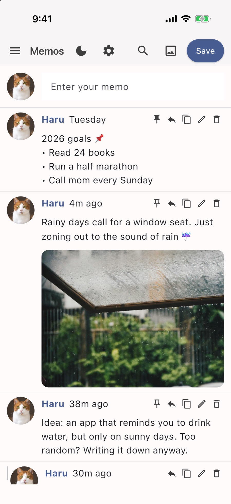

Solche Feature Guide
Tap any item to see a detailed explanation and a real screen from the app. The screenshots are from iPhone, but everything works the same on other devices.
Writing
Posting
Type in the Enter your memo box at the top of the screen, then tap Save at the top right, and your post pops up at the top of the timeline. Line breaks you add with Enter are kept just as you typed them.
Every post shows when you wrote it. Recent ones read "Just now" or "5m ago", and older ones read "Yesterday" or "Friday", so you can tell at a glance.
Adding photos
Tap the photo icon in the top bar and choose your photos. One post can easily hold up to 10. Post photos on their own, or together with a story.
Looking back at older posts
Keep scrolling down and your older posts load smoothly, one after another.
Working with posts
Replying
Tap the reply icon (the curved arrow) on the right of a post, and you can add your thoughts right below it while looking at the original. Perfect for continuing a first thought or adding a follow-up later.
Viewing threads
Replies are grouped under the original post with a vertical line, so you can read how your thinking went at a glance. And yes, you can reply to a reply!
Pinning to the top
Tap the pushpin button and the post stays at the very top of your timeline. Tap it again any time to unpin.
If you've pinned several posts, you can arrange them in any order. On a phone, press and hold a post and drag it. On a computer, just drag it with the mouse.
Edit, copy, delete
Use the small buttons lined up at the top right of each post. The pencil edits, the overlapping squares copy the text, and the trash can deletes. To prevent accidents, it asks once more before deleting.
Viewing photos
Viewing photos full screen
Tap a photo in the timeline and it opens across the whole screen. Pinch with two fingers to zoom in, or swipe sideways to browse the other photos in the same post.
On a computer, use the arrow keys (← →) to flip through photos, and press Esc to close.
Finding and organizing
Search
Tap the magnifying glass at the top and type a word you remember. Only posts containing that word are shown, and tapping X takes you back to your timeline.
Menu and folders
Open the menu (≡) at the top left to see your folders and how many posts each one holds. Tap a folder to jump to its timeline, and anything new you write goes into that folder.
Creating and managing folders
Create Folder makes a new space, and Manage Folders lets you rename or tidy them up any time.
Even if you delete a folder, the posts inside aren't lost. They move safely to the default folder. (The default folder itself can't be deleted.)
Profile
Profile picture and name
Go to Menu → Edit Profile to set a profile picture and name you like. Your profile then appears next to every post in your timeline.
Hiding the profile
Turn off the Show Profile Icon switch and the round profile area disappears, leaving much more room for your text. Especially recommended when you keep Solche in a narrow window on a desktop!
Personalizing
Settings screen
Tap the gear icon at the top, or go to Menu → Settings, to change the font size, dark mode, language and background color to your taste, and to back up or restore your data.
Dark mode
Tap the moon button in the top bar for a calm dark mode, and tap the sun button to switch straight back to the bright daytime look.
Font size and line spacing
In Adjust Font Size, slide left or right to find the size that's easiest on your eyes. The preview text shows you the result right away.
Line spacing comes in three levels: Narrow, Normal, Wide.
Background color
In Adjust Background Color, pick a shade you like or type in R, G and B values. Buttons and name colors adjust to match the tone you choose.
11 languages
On first launch the app follows your device language, and you can switch to any of the 11 languages at any time from Select Language in Settings.
English, 한국어, 日本語, 简体中文, 繁體中文, Español, Português, Français, Deutsch, Bahasa Indonesia, Русский
Backup and restore
Backing up your data
Tap Settings → Backup Data and every post, photo, folder and setting so far is bundled into a single file. You choose where to save it. Before deleting the app or changing devices, don't forget to back up!
Restoring your data
In Settings → Restore Data, choose a backup file you saved and your timeline and settings go back to exactly how they were then. What's currently on the device is overwritten by the backup, so if you want to keep your current posts too, back up first.
If the file isn't a valid Solche backup, the restore stops by itself and your existing data stays safe.
Undo last restore
Right after a restore, an Undo last restore button appears in Settings. Even if you picked an old backup by mistake, you can go straight back to how things were just before the restore.
Moving to a new device
Make a backup file on your old device, move it to the new one by email, cloud drive, USB or whatever is easiest, then tap restore. That's the whole move.
You can see exactly where on your device the data is stored under Menu → About this App.

Frequently asked questions
Can I use it without an internet connection?
Of course! Solche never connects to the internet at all, so it works just as smoothly on a plane or anywhere without signal.
Who can see my posts?
Only you. Every post and photo is stored on your device alone and is never sent to any outside server. There's no account, so there's no password to be leaked either.
Do my phone and computer sync automatically?
No. Because there's no server, automatic sync between devices isn't supported. Instead, when you move to another device, a single backup file carries everything across, photos and settings included.
If I delete the app, are my posts gone?
Yes. All data is stored inside the app, not on a server, so deleting the app deletes your posts too. Before deleting the app or changing phones, be sure to make a backup file first!
Is it free?
Yes! Free from start to finish, with no ads to interrupt your reading.
I found a bug, or I have an idea to suggest!
Always welcome! Feel free to tell me through the Ko-fi page.